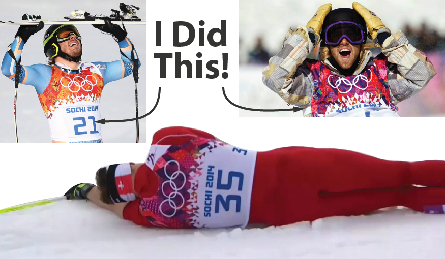
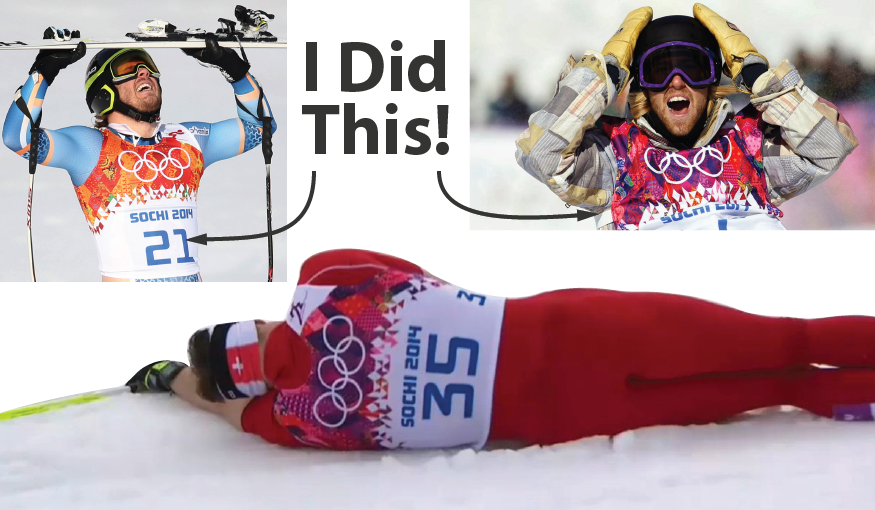

liudmilamashkina@gmail.com
Liudmila Maskina
class LiudmilaMashkina : public SoftwareEngineer,
public FashionDesigner {
public:
std::unique_ptr<SoftwareEngineer>
get(std::unique_ptr<FashionDesigner>& mashkina);
std::unique_ptr<Money> findJob(
const shared_ptr<Motivation>& purposefulness,
const CV mashkinaCV,
const coverLetter mashkinaLetter);
private:
LiudmilaMashkina(
const std::unique_ptr<FashionDesigner>& mashkina);
std::unique_ptr<SoftwareEngineer> _mashkina;
};
Hello! My name is Liudmila
and
I can Do Both
Current site is about me,
wrote and designed
by me.
wrote and designed
by me.
I am a Fashion Designer and a Software Engineer - two in one. How it has happened? Rather simple! My husband got new interesting job in Prague, while we were living
in Moscow, and our moving to Czech Republic presented me some free time and apportunity to try programming,
as I already wished for long time. So...
I decided to invest this time in
to self-development.
and
I can
Do Both
Do Both

supervised learning
I educated free in the leading Russian design university (MSU DT) and graduated with distinction. And as a result I found good job in the best Russian fashion company - Bosco Sport. 
I educated free in the leading Russian design university (MSU DT) and graduated with distinction. And as a result I found good job in the best Russian fashion company - Bosco Sport. 
unsupervised learning
I'm self-educated C++ programmer and already wrote my own game for mobile platforms, using this language (and some Python).Object Oriented Programming and Design Patterns are not just hollow consepts for me. And during Christmas holidays I wrote my first site.
I'm self-educated C++ programmer and already wrote my own game for mobile platforms, using this language (and some Python).Object Oriented Programming and Design Patterns are not just hollow consepts for me. And during Christmas holidays I wrote my first site.
I LOVE...

solving complex problems!
I used binary search when I was only Fashion Designer and even didn’t know this term.
It was my way for finding broken page in our catalogs for print, which could content over 200 pages.
learning
NEW
NEW

I believe that we are all lucky to live in exactly this time. So many thousands of years learning was a privilege, but our
World has changed sharply and now you just need Internet and time to study. Free time is a new priviliege,
and I think that it is a crime to not spend it on exploring World in all available ways.
I used binary search when I was only Fashion Designer and even didn’t know this term.
I used binary search when I was only Fashion Designer and even didn’t know this term.
It is impossible to spend in Prague rather long time and do not fell in love with draft Black Kozel (cerpane Cerne Kozel)
or Master...
BEEEEEER!